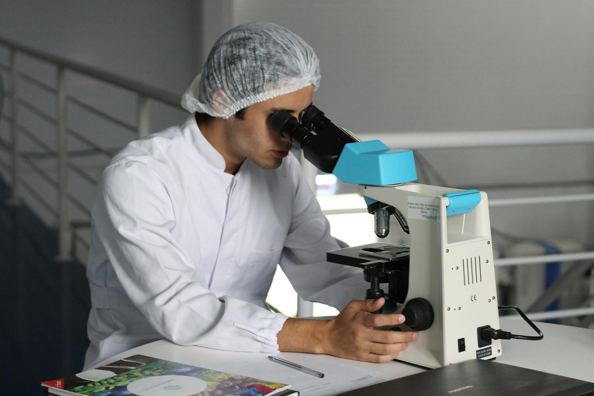
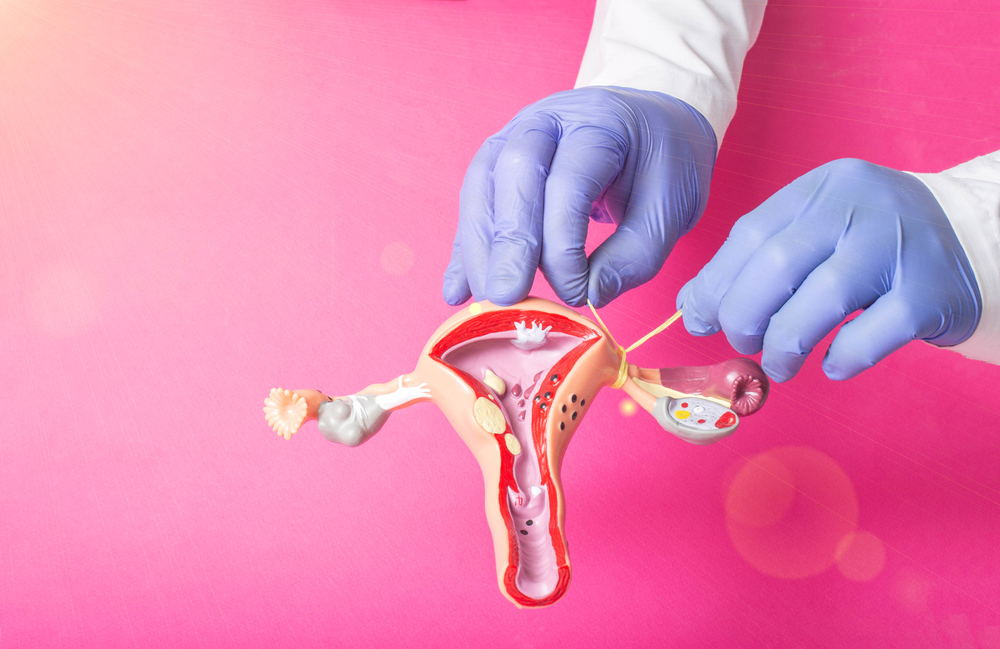
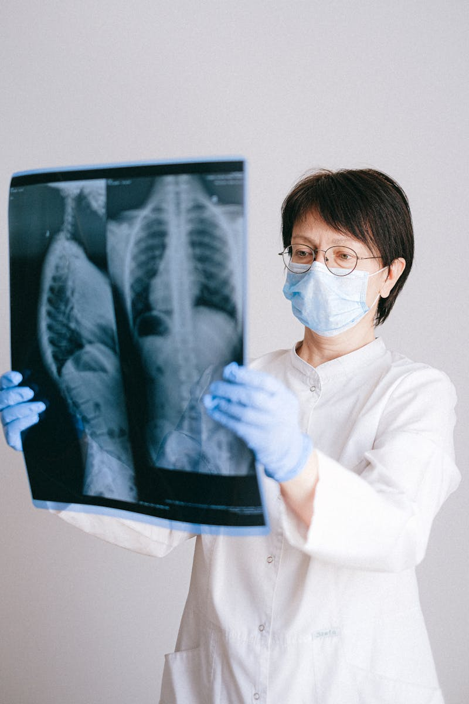

วิธีการคุมกำเนิดที่มีประสิทธิภาพสูงและปลอดภัยสูงสุด เพื่อความมั่นใจในการออกแบบอนาคตของครอบครัวอย่างแท้จริง

ทำหน้าที่สำคัญในการสร้างและปล่อยไข่ในแต่ละรอบเดือน
เปรียบเสมือนทางเดินของไข่ ซึ่งเป็นจุดนัดพบสำคัญที่เกิดการปฏิสนธิกับอสุจิ
อวัยวะหลักหนาแน่นไปด้วยกล้ามเนื้อ สำหรับรองรับการฝังตัวและเจริญเติบโตของการตั้งครรภ์
การทำหมันหญิง คือ วิธีการคุมกำเนิดแบบถาวร โดยแพทย์จะทำหัตถการทางการแพทย์เพื่อ ปิด ตัด ผูก หรืออุดท่อนำไข่ทั้งสองข้าง เพื่อป้องกันไม่ให้ไข่เดินทางมาพบกับอสุจิได้ ส่งผลให้ไม่สามารถเกิดการปฏิสนธิได้โดยสิ้นเชิง วิธีนี้เหมาะสำหรับผู้ที่มั่นใจอย่างแน่นอนแล้วว่าไม่ต้องการมีบุตรเพิ่มเติมอีกในอนาคต
ก่อนการทำหมัน ไข่จากรังไข่จะเคลื่อนที่ผ่านท่อนำไข่ได้อย่างอิสระ ทำให้มีโอกาสพบและปฏิสนธิกับอสุจิจนเกิดการตั้งครรภ์ปกติ
หลังการทำหมัน ท่อนำไข่ทั้งสองข้างจะถูกปิดผนึกถาวร ทำให้ไข่และอสุจิไม่สามารถเจอกันได้ โดยไข่จะสลายไปเองตามกลไกธรรมชาติโดยไม่มีอันตราย
ปัจจุบันศัลยกรรมผ่าตัดแบ่งออกเป็น 2 ช่วงเวลาหลัก ตามสรีระและความสะดวกของคนไข้ดังนี้

ทำในระยะปกติที่ไม่ใช่ช่วงหลังคลอด แพทย์มักจะผ่าตัดผ่านแผลขนาดเล็กมากบริเวณหน้าท้อง หรือใช้เทคนิคส่องกล้อง (Laparoscopy) มีข้อดีคือแผลเล็กมาก เจ็บน้อย และฟื้นตัวได้ไว
ทำหลังคลอดบุตรทันที (ภายใน 24–48 ชั่วโมง) เนื่องจากช่วงนี้มดลูกยังมีขนาดใหญ่และลอยตัวสูง ทำให้แพทย์หาท่อนำไข่ได้ง่าย สะดวก แผลอยู่ใต้สะดือ และใช้เวลาพักฟื้นร่วมไปกับช่วงหลังคลอดได้เลย
การทำหมันหญิงมีประสิทธิภาพการคุมกำเนิดสูงกว่า 99.5% อย่างไรก็ตาม ในทางการแพทย์ไม่มีวิธีใดคุมได้ 100% เต็ม โดยมีอัตราความล้มเหลวต่ำมากเพียง 0.5% ซึ่งเกิดจากท่อนำไข่กลับมาเชื่อมต่อกันเองตามธรรมชาติ
พบแพทย์เพื่อประเมินความพร้อม ลงนามเอกสารยินยอม และงดน้ำงดอาหารล่วงหน้า 6-8 ชั่วโมงตามคำสั่งแพทย์
วิสัญญีแพทย์จะทำการบล็อกหลัง (ยาชาเฉพาะจุด) หรือให้ยาสลบเพื่อให้คนไข้ไม่รู้สึกเจ็บตลอดการผ่าตัด
แพทย์เปิดแผลเล็กบริเวณหน้าท้อง/ใต้สะดือ แล้วปิดหรือผูกตัดท่อนำไข่ทั้ง 2 ข้าง ใช้เวลาประมาณ 20–60 นาที
เฝ้าสังเกตอาการในห้องพักฟื้น 2-3 ชั่วโมง เมื่อสัญญาณชีพปกติและหมดฤทธิ์ยา แพทย์จะอนุญาตให้กลับบ้านได้
การทำหมันหญิงเป็นหนึ่งในนวัตกรรมการวางแผนครอบครัวถาวรที่มีสถิติความปลอดภัยและประสิทธิภาพสูงสุดในปัจจุบัน ผู้ที่สนใจควรพูดคุยตกลงร่วมกันภายในครอบครัวอย่างรอบคอบ และเข้ารับคำปรึกษาจากสูตินรีแพทย์ผู้เชี่ยวชาญก่อนตัดสินใจทำหัตถการเสมอ
กลับสู่หน้าแรก